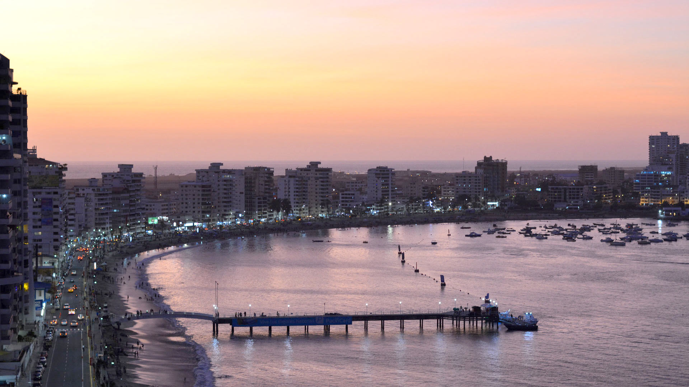
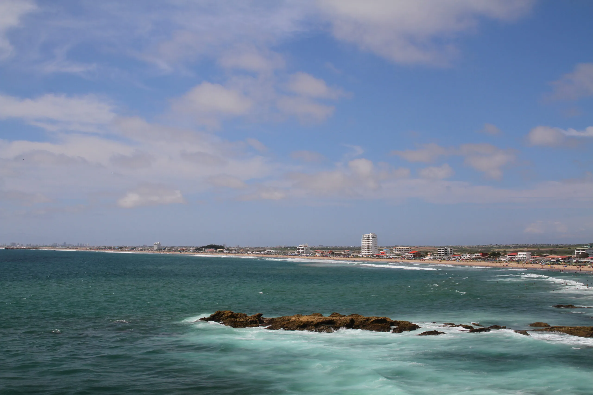
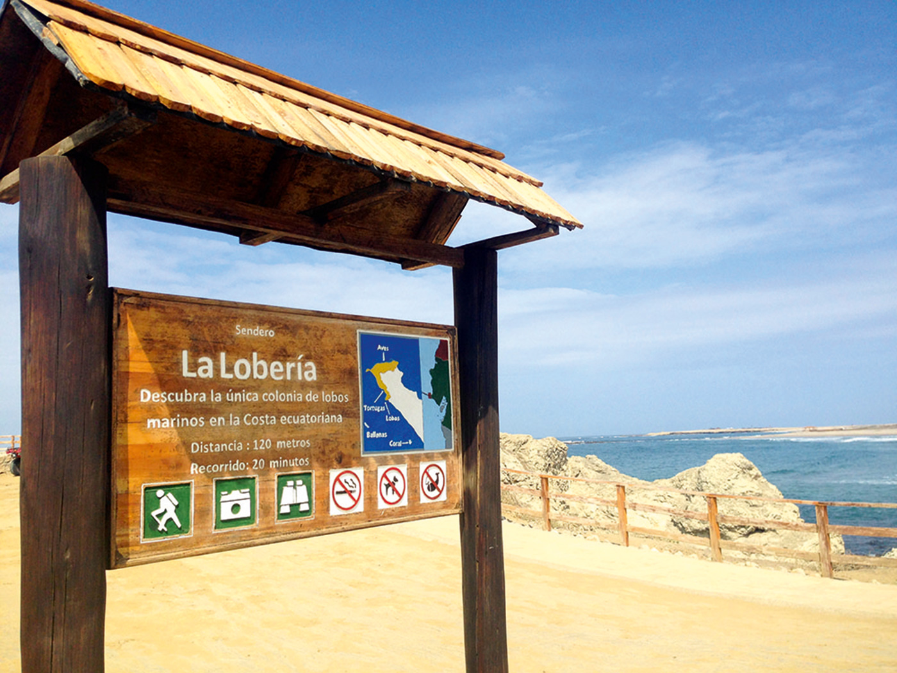

Playa de Salinas
Ubicación: Malecón de Salinas.
La playa más visitada del cantón, ideal para disfrutar del mar, deportes acuáticos y caminatas.
Actividad: Natación, paseo y fotografía.
Descubre los lugares más representativos de Salinas y vive una experiencia inolvidable entre playas, naturaleza, aventura y cultura.
Ubicación: Malecón de Salinas.
La playa más visitada del cantón, ideal para disfrutar del mar, deportes acuáticos y caminatas.
Actividad: Natación, paseo y fotografía.

Ubicación: Puntilla de Santa Elena.
Es el punto más occidental del Ecuador continental y uno de los principales miradores naturales.
Actividad: Observación del océano y avistamiento de fauna.

Ubicación: Centro de Salinas.
Un lugar ideal para caminar, disfrutar de restaurantes y contemplar el atardecer.
Actividad: Paseos y gastronomía.

Ubicación: Sector Chipipe.
Una playa tranquila con aguas calmadas, perfecta para compartir en familia.
Actividad: Natación y descanso.

Ubicación: Vía Salinas - Punta Carnero.
Famosa por sus olas, paisajes y espectaculares puestas de sol.
Actividad: Surf y fotografía.

Ubicación: Cerca de La Chocolatera.
Espacio natural donde es posible ob servar lobos marinos en su hábitat.
Actividad: Observación de fauna y naturaleza.